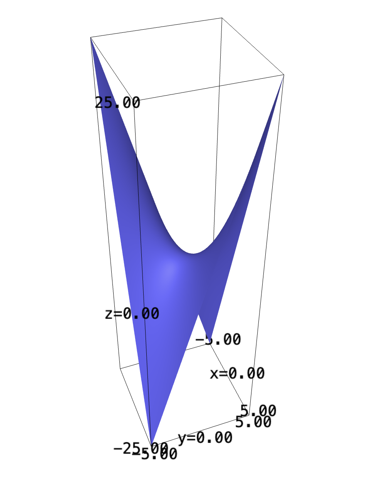
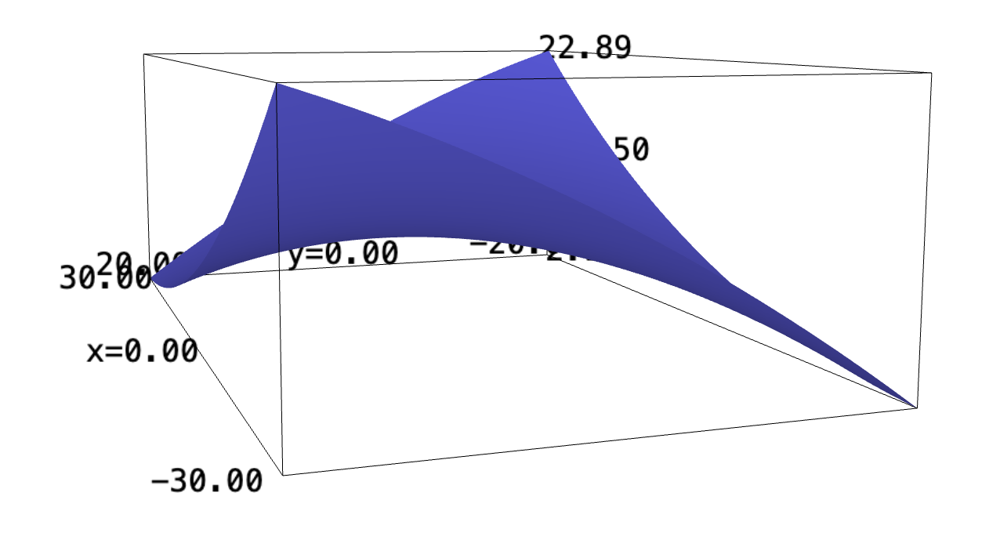

Backlinks
Table of Contents
1 A Double Integral
Find the volume of the shape bounded on the top by the function \(f(x,y)= xy\), and on the base/sides by the rectangle with corners \((x=1,y=0)\) and \((x=4, y=2)\).
Taking this integral in two ways is essentially just taking the double integral of the expression, in two different methods.
\begin{align} &\int_0^2 \int_1^4 xy\ dx\ dy\\ \Rightarrow &\int_0^2\left \frac{x^2y}{2}\ \right|_1^4 dy\\ \Rightarrow &\int_0^2\frac{16y-y}{2} dy\\ \Rightarrow &\int_0^2\frac{15y}{2} dy\\ \Rightarrow &\left\frac{15y^2}{4} \right|_0^2\\ \Rightarrow &\frac{60}{4} \end{align}We can now do that again.
\begin{align} &\int_1^4 \int_0^2 xy\ dy\ dx\\ \Rightarrow &\int_1^4\left \frac{xy^2}{2}\ \right|_0^2 dy\\ \Rightarrow &\int_1^4\frac{4x}{2} dx\\ \Rightarrow &\left\frac{4x^2}{4} \right|_1^4\\ \Rightarrow &\frac{64-4}{4}\\ \Rightarrow &\frac{60}{4} \end{align}As you can see, both results in the same value.
f(x,y) = x*y plot3d(f, (x,-5,5), (y,-5,5))

2 Pringles
Building a Pringle's house.
We first begin by creating the elliptical projection of the shape downwards.
x(t) = 30*cos(t) y(t) = 20*sin(t) parametric_plot([x,y], (0, 2*pi))

The function for which the projection is created is given by the problem as well, that:
\begin{equation} r(x,y) = \frac{1}{400}\left(\sqrt{3}x-y\right)^2 - \frac{1}{400}\left(\sqrt{3}y-x\right)^2 + 10 \end{equation}The plot of this function appears as:
r(x,y) = (1/400)*(sqrt(3)*x-y)^2 - (1/400)*(sqrt(3)*y+x)^2 + 10 plot3d(r, (x,-30,30), (y,-20,20), contours=True)

2.1 Painting the sides
This question is simply a matter of parameterization—the line integral of the function along the "base" projection forms the "wall" of the shape, whose value is therefore the amount of paint to use. We have been given the parameterization:
\begin{equation} \begin{cases} x(t) = 30\ cos(t)\\ y(t) = 20\ sin(t)\\ \end{cases} \end{equation}We first figure the derivative of each expression w.r.t. t:
\begin{equation} \begin{cases} \frac{dx}{dt} = -30\ sin(t) \\ \frac{dy}{dt} = 20\ cos(t) \end{cases} \end{equation}Lastly, we will square this expression to figure the value for \(\frac{df}{dt} = \left(\frac{dx}{dt}\right)^2 + \left(\frac{dy}{dt}\right)^2\).
\begin{equation} \frac{df}{dt} = \sqrt{900\ sin^2(t) + 400\ cos^2(t)} \end{equation}And finally, to figure the amount of paint that's needed to paint the sides, we will need to take the line integral of the function parameterized by \(x(t)\) and \(y(t)\).
\begin{equation} \int_0^{2 \pi} = \left(\frac{1}{400}\left(\sqrt{3}\ 30\ cos(t)-20\ sin(t)\right)^2 - \frac{1}{400}\left(\sqrt{3}\ 20\ sin(t)+30\ cos(t)\right)^2 + 10\right)\sqrt{900\ sin^2(t) + 400\ cos^2(t)} dt \end{equation}We will take this integral digitally.
t = var("t")
f(x,y) = (1/400)*(sqrt(3)*x-y)^2 - (1/400)*(sqrt(3)*y+x)^2 + 10
dfdt = sqrt(900*(sin(t))^2 + 400*(cos(t))^2)
monte_carlo_integral(f(-30*sin(t), 20*cos(t))*dfdt, [0], [2*pi], 20000000)
You need roughly \(1835\) units of paint to paint the sides.
2.2 Tall Ladders
We can leverage some single variable calculus to figure the critical points of the parameterization. We start again at the "base"-parameterized version of the function:
\begin{equation} f(t) = \left(\frac{1}{400}\left(\sqrt{3}\ 30\ cos(t)-20\ sin(t)\right)^2 - \frac{1}{400}\left(\sqrt{3}\ 20\ sin(t)+30\ cos(t)\right)^2 + 10\right) \end{equation}We will take the derivative of this expression as a step for solving for critical points:
f(x,y) = (1/400)*(sqrt(3)*x-y)^2 - (1/400)*(sqrt(3)*y+x)^2 + 10 latex(f(-30*sin(t), 20*cos(t)).diff())
We furthermore solve for the critical points of this function:
solve(f(-30*sin(t), 20*cos(t)).diff(), t, to_poly_solve=True)
There are four critical points to this expression. We will supply